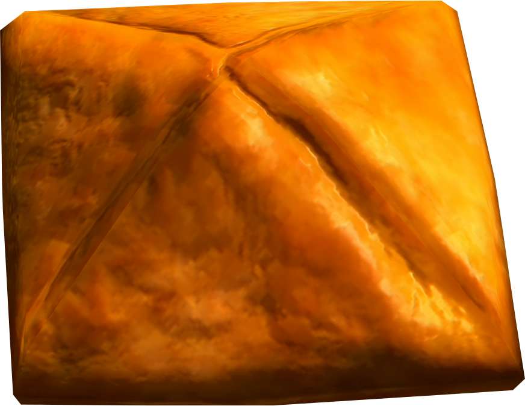

Apple Dumpling

An apple a day keeps the doctor away, an apple dumpling a day keeps sadness at bay
Ingredients
- 1 packet puff pastry sheets
- ½ cup butter, melted
- ½ cup brown sugar
- 6 large apples, peeled and diced
- 1 tsp ground cinnamon
- 1 tsp ground nutmeg
- 1 tsp vanilla essence
- 1 egg for brushing
Steps
- Preheat the oven to 200°/392°F
- Roll out pastry and cut it into 5" squares
- Grease a baking tray
- In a bowl mix the apples, spices, sugar, vanilla and half the butter
- Fill the pastries with the apple mix
- Fold the pastries into the center at all four corners and pinch in the centre
- Separate the dumplings on the baking tray
- Brush the dumplings with the remaining butter and egg
- Bake for 30-45 minutes, or until browned